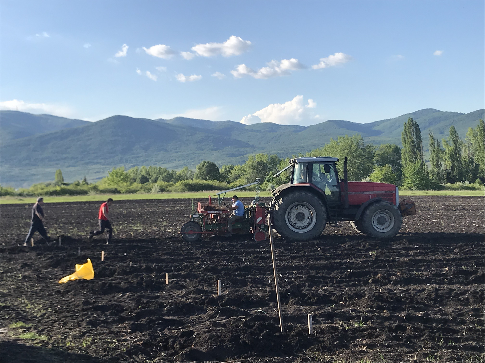
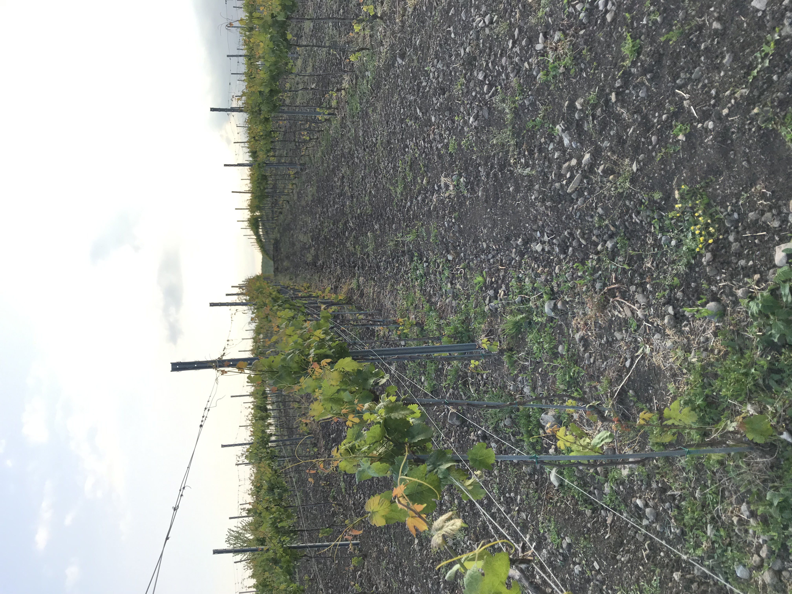
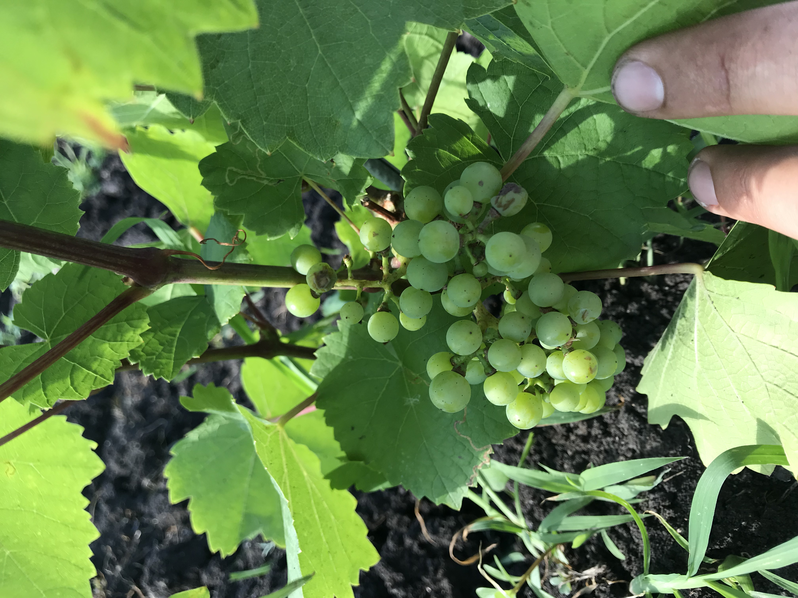

Záprel Imre
Kezdőlap
Fotóim
Szőlészet
Nehézségek
Záprel Imre
Kezdőlap
Fotóim
Szőlészet
Nehézségek
A szőlészet bemutatás

A családommal mintegy 30 hektáron gazdálkodunk különféle szőlőfajtákkal. Minden a föld szántásával kezdődik, ezt követően az oltványok elültetésével.

Az ültetés után az oszlopok földbe nyomása egy erre kialakított eszközzel.

Pár év elteltével megjelennek az első szőlőfürtök. Innentől kezdve már csak a szüretelés van hátra.